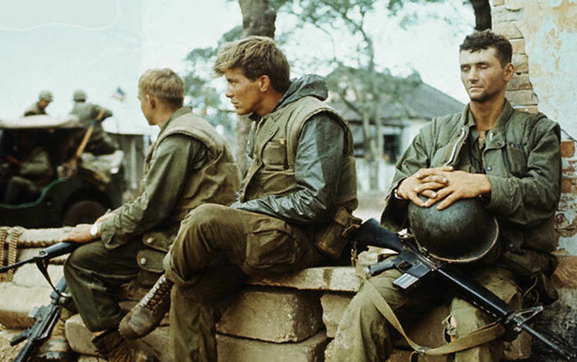
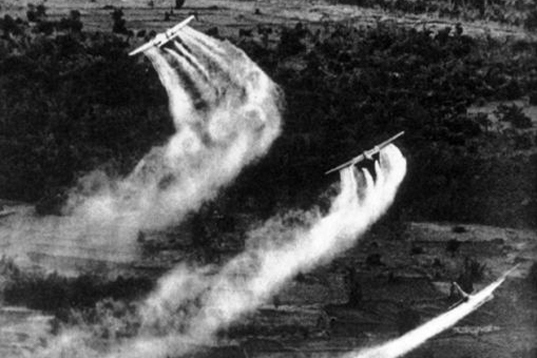

Effect of the War
Impact on the US army
By war's end, 58,220 American soldiers had been killed, more than 150,000 had been wounded, and at least 21,000 had been permanently disabled. The average age of the U.S. troops killed in Vietnam was 23.11 years. According to Dale Kueter, "Of those killed in combat, 86.3 percent were white, 12.5 percent were black and the remainder from other races."Approximately 830,000 Vietnam veterans suffered some degree of posttraumatic stress disorder. An estimated 125,000 Americans left for Canada to avoid the Vietnam draft, and approximately 50,000 American servicemen deserted. In 1977, United States president Jimmy Carter granted a full and unconditional pardon to all Vietnam-era draft dodgers.
As the Vietnam War continued inconclusively and became more unpopular with the American public, morale declined and disciplinary problems grew among American enlisted men and junior, non-career officers. Drug use, racial tensions, and the growing incidence of fragging—attempting to kill unpopular officers and non-commissioned officers with grenades or other weapons—created severe problems for the U.S. military and impacted its capability of undertaking combat operations. By 1971, a U.S. Army colonel writing in the Armed Forces Journal declared: "By every conceivable indicator, our army that now remains in Vietnam is in a state approaching collapse, with individual units avoiding or having refused combat, murdering their officers and non commissioned officers, drug-ridden, and dispirited where not near mutinous....The morale, discipline, and battle-worthiness of the U.S. Armed Forces are, with a few salient exceptions, lower and worse than at any time in this century and possibly in the history of the United States."Between 1969 and 1971 the US Army recorded more than 700 attacks by troops on their own officers. Eighty-three officers were killed and almost 650 were injured.
Effect of Chemicals
One of the most controversial aspects of the U.S. military effort in Southeast Asia was the widespread use of chemical defoliants between 1961 and 1971. They were used to defoliate large parts of the countryside to prevent the Viet Cong from being able to hide their weapons and encampments under the foliage. These chemicals continue to change the landscape, cause diseases and birth defects, and poison the food chain.
